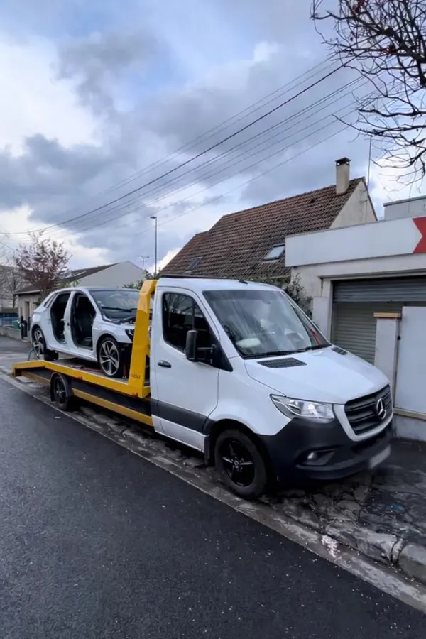

Plandeka
Bâchés -3,5 t
Notre cœur de métier. Les bâchés du transport international, appelés « plandeka » en Pologne.

Garage spécialisé dans les utilitaires de moins de 3,5 t : bâchés, frigos et châssis-cabine. Un véhicule à l’arrêt vous coûte de l’argent, alors on passe les urgences en priorité.
Utilitaires de moins de 3,5 t qui roulent toute la semaine en France et à travers l’Europe. Toutes marques : Renault Master, Iveco Daily, Mercedes Sprinter, Fiat Ducato, VW Crafter, Ford Transit…
Notre cœur de métier. Les bâchés du transport international, appelés « plandeka » en Pologne.

Un frigo immobilisé, c’est une marchandise en danger. On répare vite la mécanique pour que vous repartiez.

Plateaux, caisses, carrosseries spéciales : toutes les bases châssis-cabine utilisées dans le transport.
Votre véhicule doit repartir vite : les pannes du transport passent en priorité pour limiter l’immobilisation.
Machine professionnelle pour nettoyer le filtre à particules. Souvent bien moins cher qu’un remplacement.
En savoir plusDiagnostic électronique pour trouver vite l’origine de la panne : voyant moteur, perte de puissance, mode dégradé.
Embrayage, freins, moteur, filtres, vidange, suspension : réparation et entretien des utilitaires toutes marques.
Votre véhicule ne peut plus rouler ? Notre dépanneuse plateau vient le chercher et le ramène au garage.
Réglage de la géométrie et du parallélisme : bonne tenue de route et moins d’usure des pneus, même chargé.
On le sait. Alors on fait simple et rapide.
Appelez ou envoyez un WhatsApp avec la panne, une photo du voyant et l’emplacement du véhicule. En français ou en polonais.
Vous venez au garage ou notre dépanneuse vient chercher le véhicule. On trouve la panne et on vous explique la réparation.
On répare en priorité pour que vous repreniez la route et votre livraison le plus vite possible.
Avis laissés par nos clients sur Google, en polonais et en portugais.
« Je suis venu avec mon Renault Master pour le remplacement du tuyau d’échappement du turbo. Excellente communication, approche ciblée et surtout un travail honnête, sans frais supplémentaires inutiles. Il est clair qu’ils savent ce qu’ils font. Mon Master fonctionne parfaitement. Je reviendrai sans hésiter. Je recommande vivement ! »
« Atelier et équipe très compétents. Attentifs à la clientèle, ils offrent un accueil chaleureux et un service personnalisé. Le travail a été réalisé rapidement, avec une excellente qualité et à un prix raisonnable. Emplacement pratique juste après la sortie d’autoroute. »
« Un atelier que je recommande vivement. Je suis arrivée à 19h et ils ont terminé à 21h. Respect. »
« Je recommande vivement ! Prise en charge rapide, réparation efficace et prix très compétitifs. Service professionnel et entière satisfaction. »
« Service professionnel et rapide. Personnel compétent et très poli. Espace de repos et sanitaires à disposition. Fortement recommandé ! »

Perte de puissance, voyant allumé, mode dégradé : sur un utilitaire diesel qui roule beaucoup, le FAP finit par s’encrasser. Un remplacement coûte cher ; un nettoyage professionnel suffit souvent.



22 Av. de l’Épi
77540 Rozay-en-Brie, France
Lundi – Samedi : 9h00 – 18h00
Français · Polonais